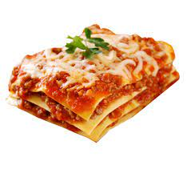

Lasagna

Description
This is a fabulous lasagna made with an artichoke and spinach mixture which has been cooked with vegetable broth, onions and garlic. The mixture is layered with lasagna noodles, pasta sauce, mozzarella cheese, and topped with crumbled feta.
Ingredients
- cooking spray
- 1 onion, chopped
- 4 clove garlic, chopped
- 1 (14,5 ounce) can vegetable broth
- 1 tablespoon chopped fresh rosemary
- 1 (14 once) can marinated artichoke hearts, drained and chopped
- 1 (10 ounce package frozen chopped spinach, thawed, drained and squeezed dry
- 1 (28 ounce) jar tomato pasta sauce
- 3 cups shredded mozzarella cheese, divided
- 1 (4once) package herb and garlic feta, crumbled